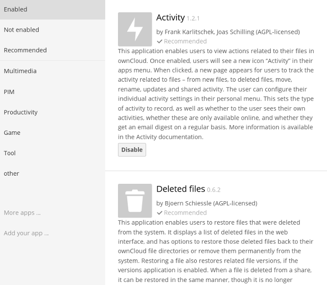

Installing and Managing Apps¶
After installing ownCloud, you may provide added functionality by installing applications.
Viewing Installed Apps¶
Some apps are enabled by default. You can see these on your Apps page, where they are filtered by Enabled, Not Enabled, and Recommended, and then all installed apps are filtered by categories such as Multimedia, PIM, and Productivity.

Managing Apps¶
In the Apps page, you can enable or disable applications. If an app is already enabled, it appears highlighted in the list. Some apps have some configurable options on the Apps page, but mainly they are enabled or disabled here, and then are configured on your ownCloud Admin page.
Please see Supported ownCloud Enterprise Subscription Apps for a list of supported Enterprise apps.
Installing Apps¶
Some apps are developed and supported by ownCloud directly, while other apps are created by third parties and either included in or available for your ownCloud server installation. Any apps that are not developed by ownCloud show a 3rd party designation. Install unsupported apps at your own risk.
To understand what an application does, click the app name to view a description of the app and any of its settings.
ownCloud provides many apps in the server installation, and you can download a bundle of useful, though unsupported, apps from your account at Customer.owncloud.com. You can find more unsupported apps in the Owncloud App Store.
To install any additional app, download and unpack it into your owncloud/apps directory. You must retain the app’s root folder; for example, the owncloud_enterprise-8.x.x.tar.bz2 archive on Customer.owncloud.com contains these apps:
- Bookmarks
- Calendar
- Contacts
- ODF file viewer
- PDF file viewer
- Video viewer
- Picture Gallery
To install the Bookmarks app, for one example, simply copy the entire bookmarks folder to owncloud/apps.
Note
Please see the Apps Development section of the ownCloud Developer Manual to find information about creating and adding your own apps.
Setting App Parameters¶
Most app parameters are configured on your Admin page, and some are set in config/config.php. Always try your Admin page first.
Using Custom App Directories¶
Use the apps_paths array in config.php to set any custom apps directory locations. The key path defines the absolute file system path to the app folder. The key url defines the HTTP web path to that folder, starting at the ownCloud web root. The key writable indicates if a user can install apps in that folder.
Note
To ensure that the default /apps/ folder only contains apps shipped with ownCloud, follow this example to setup an /apps2/ folder which will be used to store all other apps.
<?php
"apps_paths" => array (
0 => array (
"path" => OC::$SERVERROOT."/apps",
"url" => "/apps",
"writable" => false,
),
1 => array (
"path" => OC::$SERVERROOT."/apps2",
"url" => "/apps2",
"writable" => true,
),
),
Using Your Own Appstore¶
You can enable the installation of apps from your own apps store. This requires that you can write to at least one of the configured apps directories.
To enable installation from your own apps store:
Set the appstoreenabled parameter to “true”.
This parameter is used to enable your apps store in ownCloud.
Set the appstoreurl to the URL of your ownCloud apps store.
This parameter is used to set the http path to the ownCloud apps store. The appstore server must use OCS.
<?php
"appstoreenabled" => true,
"appstoreurl" => "http://api.apps.owncloud.com/v1",